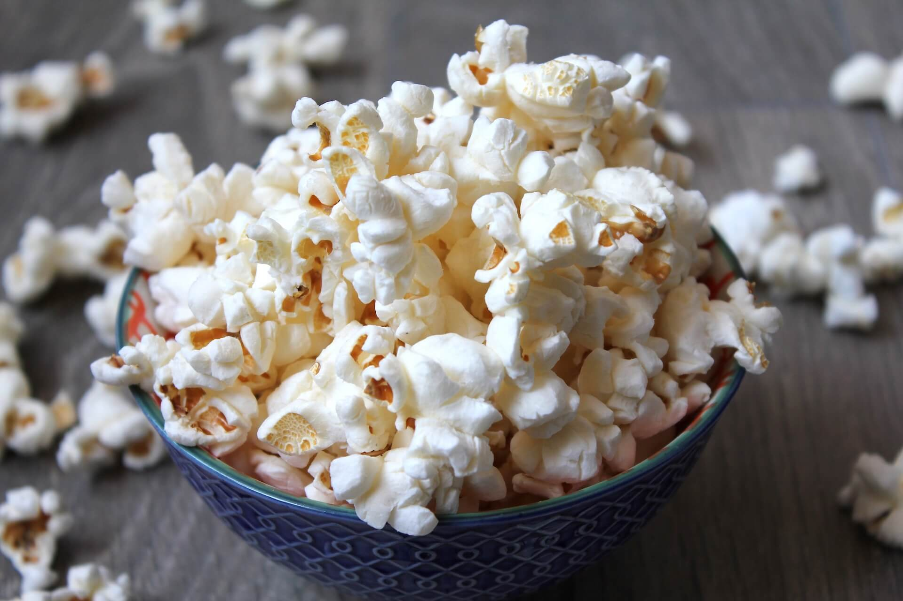

7 Low-Calorie Snacks to Include in Your Weight-Loss Journey
You may have been told before that weight loss means a big no to snacks. We’re here to tell you that’s not true. Snacks are definitely allowed; it’s just about finding ones with low calories. It’s helpful to have a list of healthy snacks stocked up in your pantry for those little snacks between meals. Learn more about how many calories you should have daily for weight loss and which low-calorie snacks you can include!
October 30, 2023

How Many Calories You Should Have Per Day For Weight Loss
As well as exercise, reducing calorie intake is a crucial factor in losing weight. However, it’s important to make sure you’re doing so safely and healthily. It often depends on your age, sex, activity level, and your current weight.
The average calorie intake for women is around 2,000 calories. To lose weight, you should, on average, reduce your calorie intake by 500 to 600 calories. So you’d ideally be looking at dropping your daily intake to around 1,200 to 1,500 calories.
It varies depending on your age. For example, infants should be having 1,000 calories a day. It’s important to reiterate that, as adults, we should never be dropping our calorie intake as low as a child. On the contrary, between the ages of 16 to 18, our calorie intake should be above average.
It’s best to either speak to your doctor or use a calorie calculator to determine what’s best for your age, weight, height, etc.
7 Low-Calorie Snacks to Include in Your Weight Loss Journey
Let’s get into the delicious and low-calorie snacks you should stock up on to help you through your weight loss journey.
1. Carrots and Hummus
Not only is this snack full of vitamin A and potassium, but it’s also a great low-calorie snack. Better yet, it’s delicious. Half a cup of hummus has roughly 200 calories, and eight baby carrots will be around 80. Combining the two is a sufficient amount of healthy calories for a snack to keep you fueled until your next meal.
2. Popcorn
When we recommend popcorn, we suggest popping it yourself with kernels. Pre-packaged popcorn tends to be full of unnecessary additives. If you pop it yourself, you control how much salt and oil you add. Homemade popcorn is full of nutrients and vitamins and, as it’s a whole-grain food, keeps you full.
3. Almonds
Almonds provide a lot of benefits, including fiber and protein. This is a super easy and low-maintenance snack, which is handy if you’re on the go. You can eat them on their own or pair them with other nuts or some dark chocolate for extra flavor.
4. Pretzels
Pretzels are low in fat and sugar, and they’re cholesterol-free. Make sure you pick up whole grain pretzels as they’re higher in fiber and contain less salt than your standard pack of pretzels. If you’re good in the kitchen, try making some from scratch!
5. Yogurt
Adding low-fat yogurt to your diet can improve your body’s ability to burn fat and speed up your metabolism. So, not only are you digesting a delicious low-calorie snack, but you’re also aiding your weight loss journey.
6. Grapes
Despite how sweet grapes are, they’re actually great for a low-calorie diet. Adding fruit into your diet is recommended anyway, so why not try grapes? They’re also fat-free and have a high water content, which will help your body feel fuller.
7. Apple Slices and Peanut Butter
Sometimes, we get sick of eating plain food, and that’s fair enough! Coating apple slices in peanut butter is a great low-calorie alternative to keep snack time exciting and satisfying. Both peanut butter and apples have great nutritional benefits and will provide plenty of fiber and protein to your diet.
Conclusion
As you’ll have gathered, snacks are fine so long as you focus on low-calorie ones. It’s essential to listen to your body if it’s hungry, but perhaps replace chips with carrots and hummus or pretzels.